In this post we :
- give a(nother) demonstration of developing customizable functions for exploring data with
ggplot2graphs
- give a(nother) demonstration of developing customizable functions for exploring data with
- take a look at the trends of providing income support to people with disabilities in the province of Alberta, Canada.
This report explores data on Assured Income for the Severely Handicapped (AISH) taken from the open.alberta.ca portal. Please inspect 01-basic-trends report to view the application of this function. Refer to https://github.com/andkov/alberta-aish-caseload for the full context and scripts.
Goal
In this post we will work through creating a function to create the following graph, in which one would be able to customize the type of measure in focus:
draw_trends <- function(d, selected_measure_type){
target_date <-as.Date("2020-04-15")
d %>%
filter(measure_type == selected_measure_type) %>%
{
ggplot( ., aes(x = date, y = value, color = measure))+
geom_line(size=4, alpha = .1, color = "black" )+ # new
geom_line(size=.5)+ # new
geom_point(
x = target_date
,shape = 21, fill = NA,size = 2, color = "black" # new
,data = . %>% filter(date == target_date))+
facet_wrap(facets = "measure", scales = "free")+
labs(
title = paste0("AISH Caseload by ", selected_measure_type)
,color = "Metric"
,x = "Date"
,y = "Number of cases"
,caption = "Temporal resolution: 1 month"
)
}
}
ds1 %>% draw_trends(selected_measure_type = "Family Composition")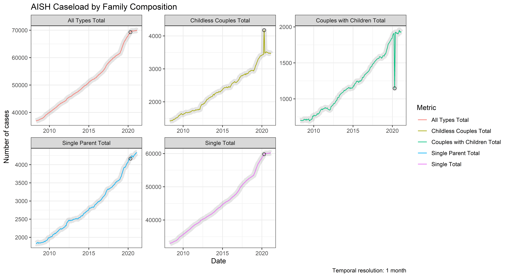
Data
The data for this exercise is taken from the open.alberta.ca portal, provided by the Ministry of Community and Social Services of Alberta. We focus on caseload counts of the Assured Income for the Severely Handicapped (AISH). For reproducibility, a copy of the data access in April 2021 has been stored in a dedicated repository https://github.com/andkov/alberta-aish-caseload.
NOTE: This section is aimed at individuals interested in concrete examples of data grooming. If you are more interested in graphing and analysis, please feel free to skim or to skip.
path_file <- "https://raw.githubusercontent.com/andkov/alberta-aish-caseload/ec847235fb94f455ba65622550781118acde04dc/data-public/raw/open-alberta/2021-04/goasharedcssspqpqara_research-strategiesopen-data00-open-data-asset-packages-2021aish-monthlyais.csv"
ds0 <- readr::read_csv(path_file) %>% janitor::clean_names()The data set comes in well groomed and has the following form:
ds0 %>% glimpse()Rows: 2,241
Columns: 5
$ ref_date <chr> "2008/04", "2008/04", "2008/04", "2008/04", "2008/04", "2008/05", "2008/05...
$ geography <chr> "Alberta", "Alberta", "Alberta", "Alberta", "Alberta", "Alberta", "Alberta...
$ measure_type <chr> "Family Composition", "Family Composition", "Family Composition", "Family ...
$ measure <chr> "Single Total", "Single Parent Total", "Childless Couples Total", "Couples...
$ value <dbl> 32948, 1836, 1421, 700, 36905, 33039, 1832, 1424, 702, 36997, 33075, 1849,...ds0 %>% slice(1:10) # A tibble: 10 x 5
ref_date geography measure_type measure value
<chr> <chr> <chr> <chr> <dbl>
1 2008/04 Alberta Family Composition Single Total 32948
2 2008/04 Alberta Family Composition Single Parent Total 1836
3 2008/04 Alberta Family Composition Childless Couples Total 1421
4 2008/04 Alberta Family Composition Couples with Children Total 700
5 2008/04 Alberta Family Composition All Types Total 36905
6 2008/05 Alberta Family Composition Single Total 33039
7 2008/05 Alberta Family Composition Single Parent Total 1832
8 2008/05 Alberta Family Composition Childless Couples Total 1424
9 2008/05 Alberta Family Composition Couples with Children Total 702
10 2008/05 Alberta Family Composition All Types Total 36997The only apparent tweak needed is conversion of the ref_date variable to date, so it’s easier to handle in graphs.
ds1 <- ds0 %>%
mutate(
date = parse_date_time(ref_date,"Y%m%") %>% as_date() + 14 # middle of the month
)Each of the 7 distinct values of measure_type has its own set of measures
ds0 %>% distinct(geography, measure_type, measure) %>% arrange(measure_type) %>% neat()| geography | measure_type | measure |
|---|---|---|
| Alberta | AISH Client Average Age | Age 18 - 19 |
| Alberta | AISH Client Average Age | Age 20 - 24 |
| Alberta | AISH Client Average Age | Age 25 - 29 |
| Alberta | AISH Client Average Age | Age 30 - 34 |
| Alberta | AISH Client Average Age | Age 35 - 39 |
| Alberta | AISH Client Average Age | Age 40 - 44 |
| Alberta | AISH Client Average Age | Age 45 - 49 |
| Alberta | AISH Client Average Age | Age 50 - 54 |
| Alberta | AISH Client Average Age | Age 55 - 59 |
| Alberta | AISH Client Average Age | Age 60 - 64 |
| Alberta | AISH Client Average Age | Age 65 + |
| Alberta | AISH Client Average Age | All Ages Total |
| Alberta | AISH Client Caseload | Straight AISH |
| Alberta | AISH Client Caseload | Modified AISH |
| Alberta | AISH Client Caseload | Com. Residence |
| Alberta | AISH Client Caseload | Client Caseload Total |
| Alberta | AISH Client Gender | Female |
| Alberta | AISH Client Gender | Male |
| Alberta | AISH Client Gender | All Gender Total |
| Alberta | AISH Client Income Type Snapshots | Employment Participation |
| Alberta | AISH Client Income Type Snapshots | CPP(D) income |
| Alberta | AISH Client Primary Medical Condition | Physical Disabilities |
| Alberta | AISH Client Primary Medical Condition | Mental Illness Disorders |
| Alberta | AISH Client Primary Medical Condition | Cognitive Disorders |
| Alberta | AISH Client Primary Medical Condition | Unknown |
| Alberta | AISH Client Primary Medical Condition | All Primary Medical Total |
| Alberta | CSS Regions | Calgary |
| Alberta | CSS Regions | Central |
| Alberta | CSS Regions | Edmonton |
| Alberta | CSS Regions | North Central |
| Alberta | CSS Regions | North East |
| Alberta | CSS Regions | North West |
| Alberta | CSS Regions | South |
| Alberta | CSS Regions | All Regions Total |
| Alberta | Family Composition | Single Total |
| Alberta | Family Composition | Single Parent Total |
| Alberta | Family Composition | Childless Couples Total |
| Alberta | Family Composition | Couples with Children Total |
| Alberta | Family Composition | All Types Total |
so it does not make sense to convert measure to a factor
Visualization
Our goal in this report is to examine longitudinal trends in each measure_type. However, we would like to do it as efficiently as possible, that is with the minimum number of lines of code. To understand our challenge better, let’s try out some basic graphs that should help us scope the parameters of functionalization.
ds1 %>%
ggplot(aes(x = date, y = value, color = measure))+
geom_line()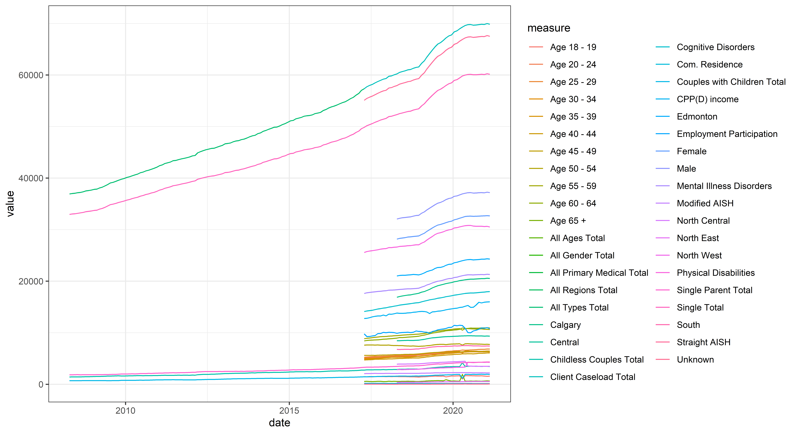
Not a terrifically useful graph to study the patterns, but it is quite helpful in making the following observations about the data:
Some trends run longer than others, so we need
xaxis to be flexibleThe scale of values range from ~
70,000to100so, including them on the same canvas will cause problems for interpretation
Let’s see if we can address some of these issues by spreading measure_type across facets:
ds1 %>%
ggplot(aes(x = date, y = value, color = measure))+
geom_line()+
facet_wrap(facets = "measure_type") # new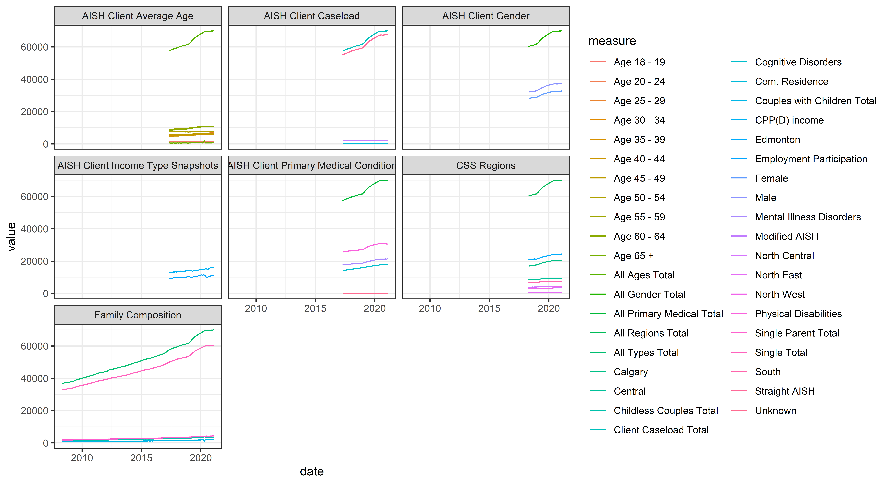
This helps, especially if we allow the axes to adjust to the available data in each facet:
ds1 %>%
ggplot(aes(x = date, y = value, color = measure))+
geom_line()+
facet_wrap(facets = "measure_type", scales = "free") # new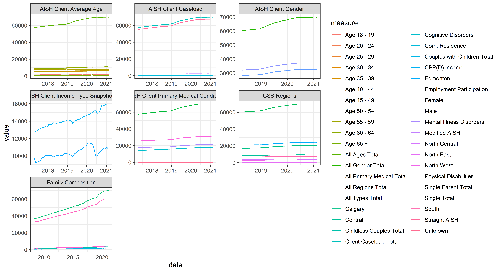
Remaining problems:
There are too many values of
measure: it makes no sense to represent them with individual colorsThe scales are still vary drastically within each facet (i.e. each
measure_type), making patterns on smaller scale illegible
It does not look like we’ll be able to fit everything onto the same graph, so let’s consider a system that deals with each level of measure_type individually. Let’s take Family Composition as a guinea pig:
ds1 %>%
filter(measure_type == "Family Composition") %>%
ggplot(aes(x = date, y = value, color = measure))+
geom_line()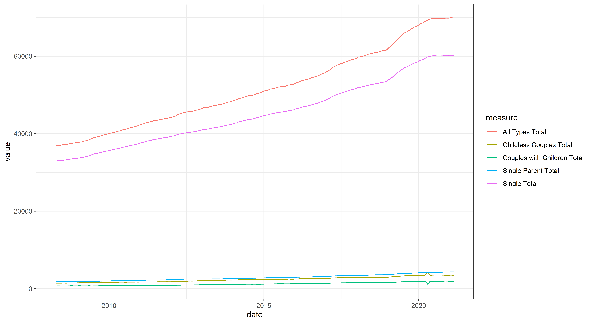
It looks like of the of the measures is actually a sum of all others. Let’s verify this:
given_month <- as.Date("2020-01-15") # any time point, really
ds1 %>%
filter(measure_type == "Family Composition") %>%
filter(date == given_month) # A tibble: 5 x 6
ref_date geography measure_type measure value date
<chr> <chr> <chr> <chr> <dbl> <date>
1 2020/01 Alberta Family Composition Single Total 58935 2020-01-15
2 2020/01 Alberta Family Composition Single Parent Total 4117 2020-01-15
3 2020/01 Alberta Family Composition Childless Couples Total 3423 2020-01-15
4 2020/01 Alberta Family Composition Couples with Children Total 1880 2020-01-15
5 2020/01 Alberta Family Composition All Types Total 68355 2020-01-15ds1 %>%
filter(measure_type == "Family Composition") %>%
filter(date == given_month) %>%
filter(!measure == "All Types Total") %>%
summarize(sum_without_all_types_total = sum(value))# A tibble: 1 x 1
sum_without_all_types_total
<dbl>
1 68355Yes, it is. But even if it were stored in a separate column (which would present other difficulties), we still would have the outlier Single Total, which dwarfs other trend lines, making them ineligible. If the goal of the visualization is to understand the shape of the longitudinal patterns (as it is, in this case), we should view each line on its own, with scale adjustments that optimize the display of information:
ds1 %>%
filter(measure_type == "Family Composition") %>%
ggplot(aes(x = date, y = value, color = measure))+
geom_line()+
facet_wrap(facets = "measure", scales = "free")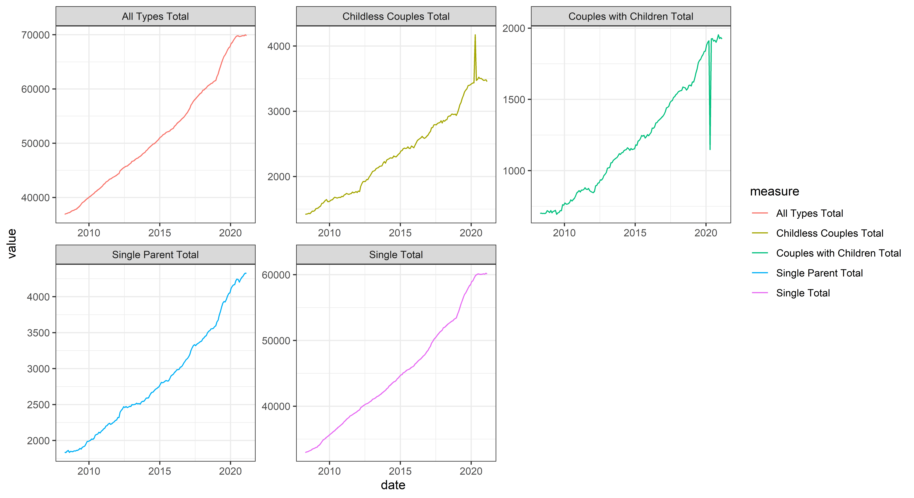
Yes, that’s what we want: the shape of each trend is clearly visible, regardless of the scale on which the values are recorded.
It appears that what we need is to build such display for each level of measure_type
Essential Automation
Now that we have articulated our technical objective
Create a graph for each level of
measure_typewith a single value ofmeasureon each facet
we can proceed to implementing the automation.
Yes, we can simply copy-paste the code and replace Family Composition with another level, for example:
ds1 %>%
filter(measure_type == "AISH Client Primary Medical Condition") %>% # new
ggplot(aes(x = date, y = value, color = measure))+
geom_line()+
facet_wrap(facets = "measure", scales = "free")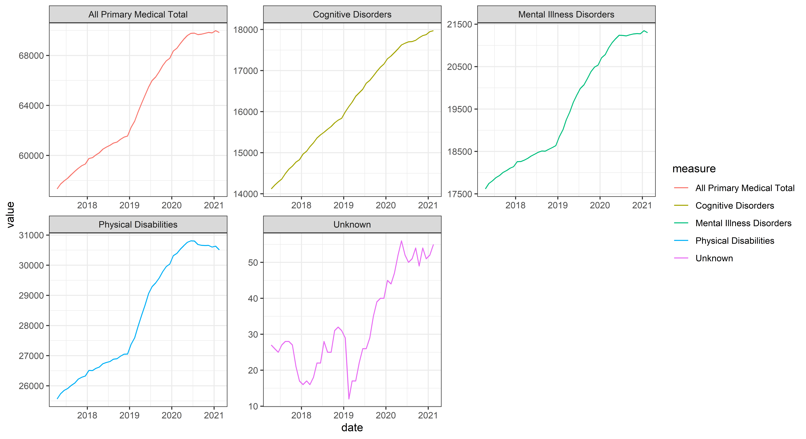
and, in certain cases, this would be advisable: for example, when there are just a handful of levels to go through and adjusting the display of each is hard to generalize. In our case, however, we’d like to take advantage of this relatively simple scenario to go through the process of developing graphing functions.
Let’s start by creating the simplest possible function without any movable parts:
draw_trends <- function(d){
d %>%
filter(measure_type == "Family Composition") %>%
ggplot(aes(x = date, y = value, color = measure))+
geom_line()+
facet_wrap(facets = "measure", scales = "free")
}
ds1 %>% draw_trends() The first argument ( according to
The first argument ( according to tidyverse convention ) should always be the object containing the data (e.g. vector, tibble, list). Notice that all decisions about what the graph would look like are hard-coded within the function. This is very inefficient, but a good start. Next, let’s adjust the function so that we can pass different level of measure_type
draw_trends <- function(d, selected_measure_type){ # new
d %>%
filter(measure_type == selected_measure_type) %>% # new
ggplot(aes(x = date, y = value, color = measure))+
geom_line()+
facet_wrap(facets = "measure", scales = "free")
}
ds1 %>% draw_trends(selected_measure_type = "AISH Client Caseload")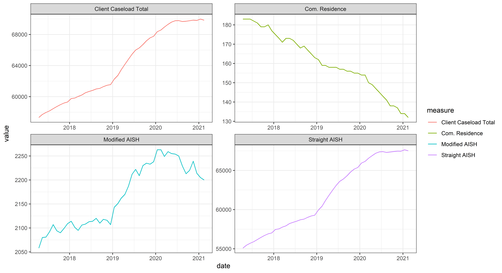
With respect to the essential utility of our graphing function, we are done: you can pass any of the values of measure_type
ds1 %>% distinct(measure_type)# A tibble: 7 x 1
measure_type
<chr>
1 Family Composition
2 AISH Client Caseload
3 AISH Client Primary Medical Condition
4 AISH Client Average Age
5 AISH Client Income Type Snapshots
6 AISH Client Gender
7 CSS Regions to the selected_measure_type argument of the draw_trends function to create a display of the desired focus. However, there are some enhancement that would be quite useful to have (e.g. title, labels, data highlights), which may be a trickier to accomplish in a function compared to regular ggplot2 script. We turn to them next.
Enhanced Automation
Let’s take care of the enhancement that do not require much finesse:
draw_trends <- function(d, selected_measure_type){
d %>%
filter(measure_type == selected_measure_type) %>%
ggplot(aes(x = date, y = value, color = measure))+
geom_line()+
facet_wrap(facets = "measure", scales = "free")+
labs( # new
title = paste0("AISH Caseload by ", selected_measure_type) # new
,color = "Metric" # new
,x = "Date" # new
,y = "Number of cases" # new
,caption = "Temporal resolution: 1 month" # new
)
}
ds1 %>% draw_trends(selected_measure_type = "Family Composition")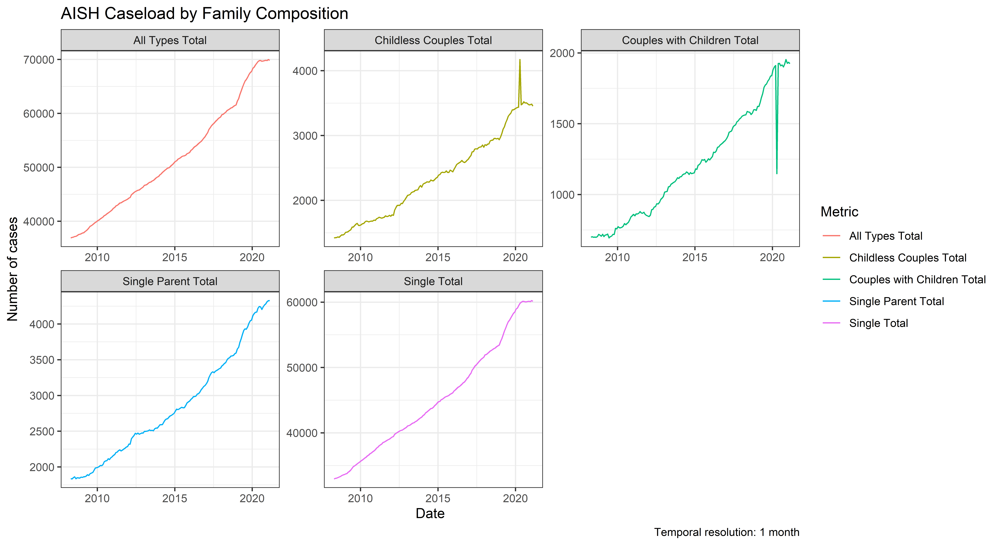
These options will apply equally to all conditions, except for title, which we can assembled with a common prefex AISH Caseload by and the value of the argument selected_measure_type.
As you have probably noticed, there is some anomaly in the early 2020, visible in Childless Couples Total and Couples with Children Total. In fact, this anomaly ( probably related to the onset of COVID-19 pandemic) is present in other measure_types, so it would help us if we could highlight that particular month in each trajectory. Let’s do it with a hollow circle:
draw_trends <- function(d, selected_measure_type){
d %>%
filter(measure_type == selected_measure_type) %>%
ggplot(aes(x = date, y = value, color = measure))+
geom_line()+
# start new
geom_point(
x = as.Date("2020-04-15")
,shape = 21
)+
# end new
facet_wrap(facets = "measure", scales = "free")+
labs(title = paste0("AISH Caseload by ", selected_measure_type))
# we'll omit other lab() options to have less to read during development
}
ds1 %>% draw_trends(selected_measure_type = "Family Composition")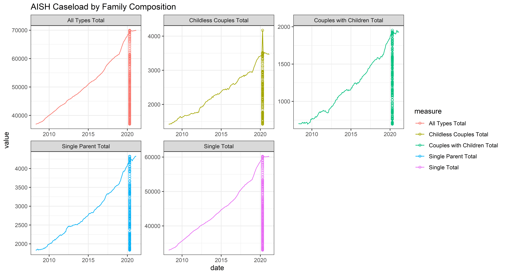
We just printed the circles for ALL rows for this data, regardless of the measure_type and measure, so we must filter the data that is passed to this specific geom:
draw_trends <- function(d, selected_measure_type){
d %>%
filter(measure_type == selected_measure_type) %>%
ggplot(aes(x = date, y = value, color = measure))+
geom_line()+
geom_point(
x = as.Date("2020-04-15")
,shape = 21
,color = "black" # new
,data = d %>% # new
filter(measure_type == selected_measure_type) %>% # new
filter(date == as.Date("2020-04-15")) # new
)+
facet_wrap(facets = "measure", scales = "free")+
labs(title = paste0("AISH Caseload by ", selected_measure_type))
}
ds1 %>% draw_trends(selected_measure_type = "Family Composition")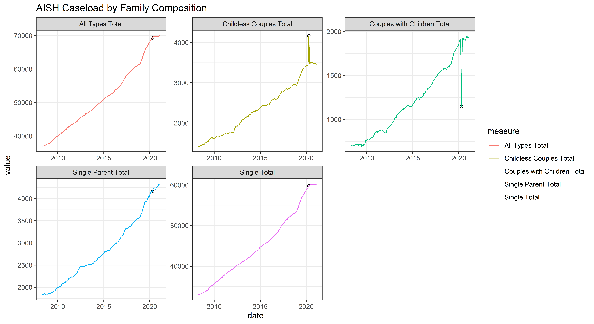
Notice, that we must repeat the filter applied to data prior to passing it to ggplot function. It’s not a big deal, but if more elaborate transformation are needed within the graphing function, we are best to use the {} solution, available past ggplot2 3.0.0, which we described elsewhere (see DSS Power Tips - November 2020):
draw_trends <- function(d, selected_measure_type){
d %>%
filter(measure_type == selected_measure_type) %>%
{ # new ! notice the dot below the exclamation mark
ggplot( ., aes(x = date, y = value, color = measure))+
geom_line()+
geom_point(
x = as.Date("2020-04-15")
,shape = 21
,color = "black"
,data = . %>% # new
# filter(measure_type == selected_measure_type) %>% # no longer needed
filter(date == as.Date("2020-04-15"))
)+
facet_wrap(facets = "measure", scales = "free")+
labs(title = paste0("AISH Caseload by ", selected_measure_type))
} # new
}
ds1 %>% draw_trends(selected_measure_type = "Family Composition")The date of interests is a hard-coded (twice!), so let’s pull it out into a common area, which would help us turn it into another movable part of the graphing function (if we choose to do so):
draw_trends <- function(d, selected_measure_type){
target_date <-as.Date("2020-04-15")
d %>%
filter(measure_type == selected_measure_type) %>%
{
ggplot( ., aes(x = date, y = value, color = measure))+
geom_line()+
geom_point(
x = target_date # new
,shape = 21
,color = "black"
,data = . %>%
filter(date == target_date) # new
)+
facet_wrap(facets = "measure", scales = "free")+
labs(title = paste0("AISH Caseload by ", selected_measure_type))
}
}Finally, let’s add some aesthetic enhancements to make the graphs a bit more visually appealing and patterns more discernible:
draw_trends <- function(d, selected_measure_type){
target_date <-as.Date("2020-04-15")
d %>%
filter(measure_type == selected_measure_type) %>%
{
ggplot( ., aes(x = date, y = value, color = measure))+
geom_line(size=4, alpha = .1, color = "black" )+ # new
geom_line(size=.5)+ # new
geom_point(
x = target_date
,shape = 21, fill = NA,size = 2, color = "black" # new
,data = . %>% filter(date == target_date))+
facet_wrap(facets = "measure", scales = "free")+
labs(
title = paste0("AISH Caseload by ", selected_measure_type)
,color = "Metric"
,x = "Date"
,y = "Number of cases"
,caption = "Temporal resolution: 1 month"
)
}
}
ds1 %>% draw_trends(selected_measure_type = "Family Composition")Application
We are now ready to cycle through the levels of measure_type, creating a faceted graph for each. Please inspect 01-basic-trends report to view the application of this function. Refer to https://github.com/andkov/alberta-aish-caseload for the full context and scripts.